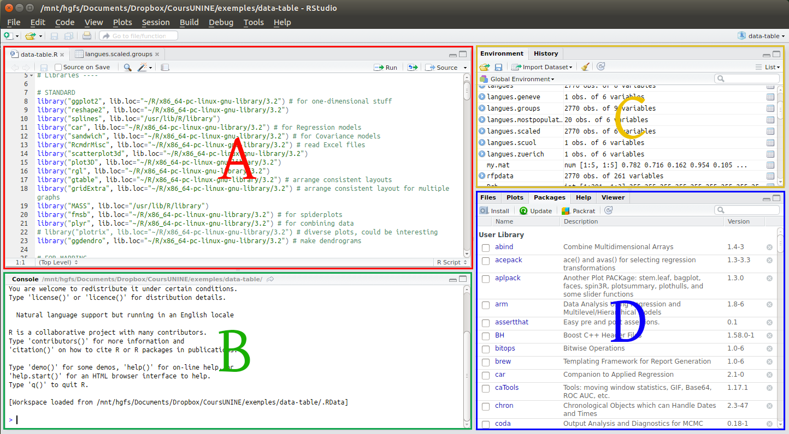
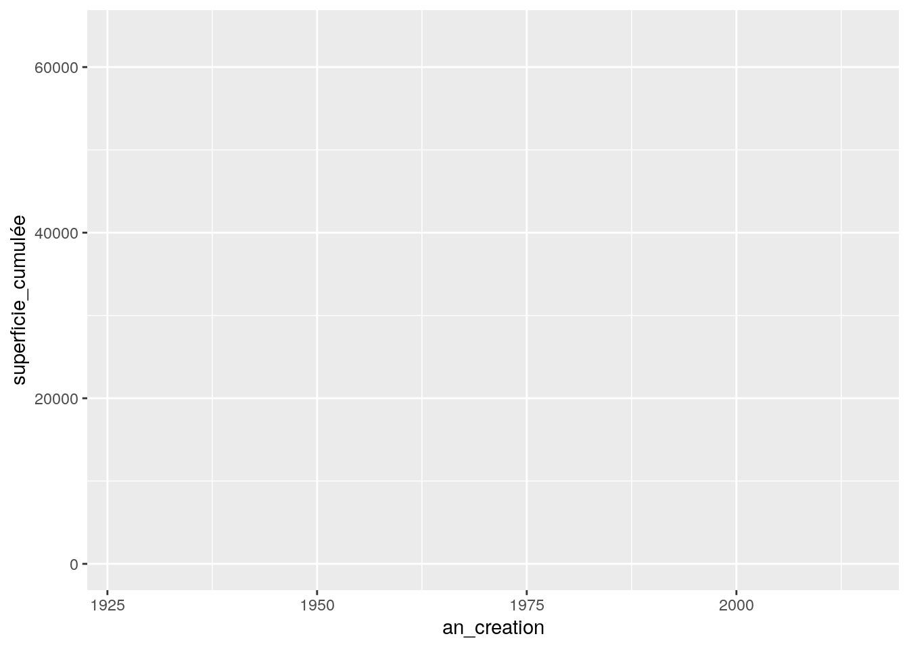
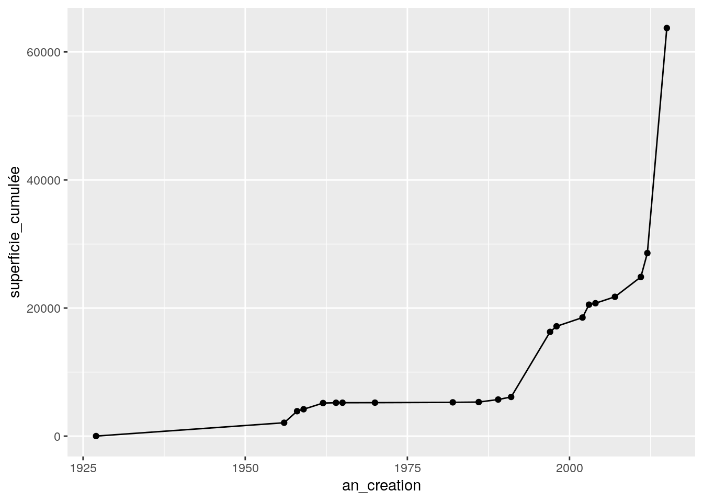
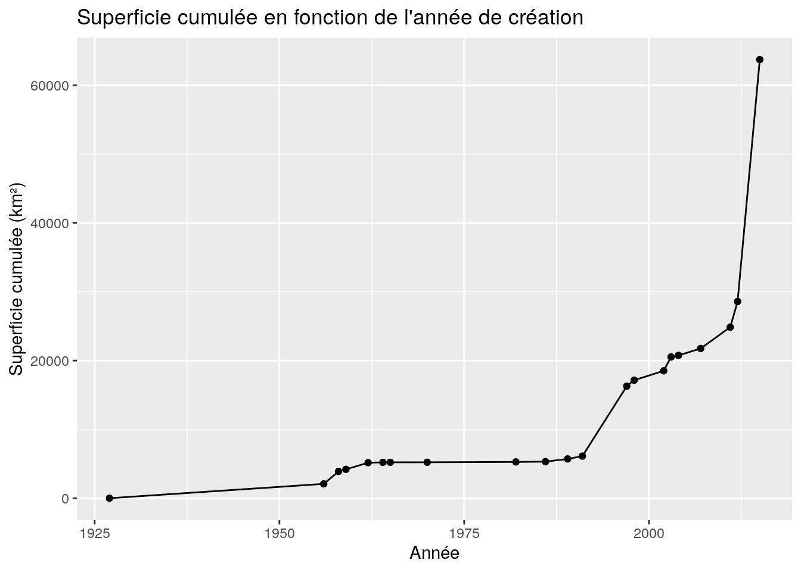
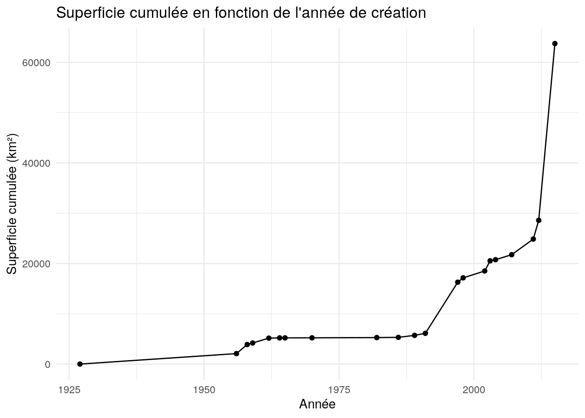

# Mauvaise lisibilité
total<-10+2
# Bonne lisibilité
total <- 10 + 22 Fondamentaux pour l’utilisation de R
2.1 L’environnement
2.1.1 Différences R et Rstudio
R est un langage de programmation open source spécialisé dans la statistique et l’analyse des données. Il a été créé pour fournir un environnement convivial pour la manipulation, l’analyse et la visualisation des données.Il existe d’autres langages de programmation comme Python, JavaScript, Java, C++, etc.
R est utilisé pour effectuer des opérations statistiques, faire de la modélisation, créer des graphiques et effectuer des analyses de données complexes.
R est extrêmement flexible et extensible grâce à des packages R, qui ajoutent des fonctionnalités supplémentaires.
RStudio est un environnement de développement intégré (IDE) conçu spécifiquement pour travailler avec le langage R. C’est un logiciel qui fournit une interface utilisateur plus conviviale pour écrire, exécuter et gérer des scripts R. Il existe d’autres IDE, comme Visual Studio Code ou Jupyter Notebook.
RStudio inclut un éditeur de texte avec coloration syntaxique, un gestionnaire de packages, des fenêtres pour l’affichage des graphiques et des données, et bien d’autres fonctionnalités pour améliorer la productivité des utilisateurs R.
En somme, R est le langage de programmation sous-jacent pour l’analyse des données, tandis que RStudio est un environnement de développement qui facilite l’utilisation de R.
2.1.2 Sources d’apprentissage
Il existe de plusieurs ressources en français pour apprendre à coder sur R. Nous vous recommandons en particulier :
- Introduction à R et au Tidyverse (Barnier 2022) Guide-R: Guide pour l’analyse de données d’enquêtes avec R (Larmarange 2024)
- utilitR: documentation collaborative sur R de l’INSEE (Galiana and Meslin 2022)
Les bonnes ressources anglophones gratuites sont très nombreuses et faciles à trouver sur Internet. Le grand classique est R for data science, de Grolemund et Wickham (2022). On se focalise ici avec deux autres qui sont le plus en lien avec nos sujets :
- Geocomputation with R, a book on geographic data analysis,visualization and modeling (Lovelace, Nowosad, and Muenchow 2022).
- Mapme.biodiversity: Efficient Monitoring of Global Biodiversity Portfolios (Görgen and Bhandari 2022)
N’hésitez pas à chercher directement sur le Web en cas de problème. Vous serez souvent conduits vers les forums stackoverflow ou RStudio, qui sont aussi des ressources très précieuses pour résoudre des problèmes très spécifiques.
Pour un apprentissage interactif, vous pouvez également utiliser ChatGPT. Cet outil basé sur l’intelligence artificielle s’avère particulièrement utile pour les débutants qui ont besoin de support personnalisé ou pour les utilisateurs avancés comme assistant de programmation pour structurer des chaînes de traitement ou aider avec les problèmes les plus courants. Attention toutefois car il arrive régulièrement à ChatGPT “d’halluciner” des réponses lorsqu’il s’agit de questions très spécifiques.
Pour vous retrouver parmi la multitude de packages existants, il existe une ressource précieuse en ligne : CRAN Task View (https://cran.r-project.org/web/views/). Ce registre fournit des recommandations sur les packages présents sur CRAN adaptés à un sujet spécifique.
Il existe également de superbes cheat-sheet (“antisèches”) qui récapitulent les principales ressource :
- https://iqss.github.io/dss-workshops/R/Rintro/base-r-cheat-sheet.pdf
- https://rstudio.github.io/cheatsheets/
2.1.3 Interface Rstudio

A : fenêtre script/source B : console C : environnement D : explorateur
La fenêtre de script permet d’éditer les fichiers scripts en vue d’éxécuter le code.
La console est la fênetre où s’éxécute le code et où on peut directement taper des commandes. Il n’est pas obligatoire de passer par la fenêtre de script.
Le signe “>” dans votre console est appelé “invite de commande” ou “prompt”. C’est le symbole que la console utilise pour indiquer qu’elle est prête à recevoir des commandes ou des instructions de l’utilisateur. Une fois que vous voyez cet invite, vous pouvez commencer à entrer des commandes en utilisant le langage R. Après avoir entré une commande, vous appuyez sur Entrée pour l’exécuter.
L’environnement rassemble des fonctionnalités pour suivre le fonctionnement de R, en faisant notamment apparaître les différents objets générés par notre script.
L’explorateur permet de connaître les fichiers de notre ordinateur, de visualiser les rendus graphiques et cartographiqus, les différentes librairies et l’aide pour l’utilisation de ces dernières.
2.2 Introduction au langage R
R est un langage de programmation puissant et flexible, particulièrement adapté pour l’analyse de données et la statistique. Cette section couvre les bases du langage R, en fournissant une introduction aux concepts fondamentaux tels que les objets, les types de données, les fonctions, et les bonnes pratiques de codage. Ce guide est conçu pour vous aider à acquérir les bases nécessaires pour écrire du code efficace et lisible.
2.2.1 La lisibilité du code
La lisibilité du code est cruciale pour comprendre ce qu’un script fait, surtout après une certaine période ou lorsqu’on travaille en équipe.
- Espaces autour des opérateurs : Utilisez des espaces autour des opérateurs pour améliorer la lisibilité.
- Commentaires clairs : En R, un commentaire commence par le symbole
#. Tout ce qui est écrit après#sur la même ligne ne sera pas exécuté. Utilisez des commentaires pour expliquer des parties de code complexes ou des étapes importantes.
# Calcul du total des deux valeurs
total <- 10 + 2 # Ajout de 10 et 2- Utilisation des parenthèses : Pour les expressions complexes, utilisez des parenthèses afin de rendre l’ordre des opérations explicite.
# Utilisation des parenthèses pour clarifier l'ordre des opérations
resultat <- (10 + 2) * (5 / 14) - (2 * 2)2.2.1.1 Exercice
- Améliorer la lisibilité : Reprenez le code suivant et améliorez sa lisibilité en ajoutant des espaces et des commentaires appropriés.
resultat<-5*(3+2)-12.2.2 L’assignation (création d’objets)
En R, on utilise <- pour assigner une valeur à un objet. Cette assignation permet de créer des variables et de les réutiliser plus tard. L’opérateur <- est spécifique à R, mais il est possible d’utiliser = dans certains cas. Cependant, <- est la convention généralement acceptée en R pour éviter toute ambiguïté.
- Nommer les objets de manière explicite : Choisissez des noms explicites pour les objets afin de comprendre leur rôle dans le code.
# Assignation d'une valeur
moyenne_hauteur <- 170 # Hauteur moyenne en cm- Réassignation des valeurs : Lorsque vous réassignez une valeur à un objet, la valeur précédente est perdue.
x <- 2
x <- 5 # La valeur de x est maintenant 5- Suppression d’un objet : Pour libérer la mémoire, vous pouvez supprimer un objet avec
rm().
rm(x) # Supprime l'objet x2.2.2.1 Exercice
- Créer et réassigner des objets : Créez un objet
ageet assignez-lui une valeur, puis modifiez cette valeur. Supprimez ensuite l’objet.
2.2.3 Les différents types d’objets en R
R utilise différents types d’objets pour stocker des données, chacun ayant ses spécificités.
- Chaînes de caractères : Les chaînes de caractères sont délimitées par des guillemets.
nom <- "Alice"
print(nom) # Affiche "Alice"[1] "Alice"- Vecteurs : Les vecteurs sont des objets qui contiennent plusieurs valeurs de même type.
# Création d'un vecteur de tailles
tailles <- c(156, 164, 197, 147, 173)
tailles_m <- tailles / 100 # Conversion en mètresLes opérations peuvent être appliquées à l’ensemble des valeurs d’un vecteur.
tailles_m + 0.1 # Ajoute 0,1 m à chaque valeur du vecteur[1] 1.66 1.74 2.07 1.57 1.832.2.3.1 Exercice
- Manipuler des vecteurs : Créez un vecteur de 5 poids en kilogrammes. Convertissez-les en grammes.
2.2.4 Les tableaux de données (data.frame)
Les data.frame sont des structures de données très courantes qui permettent de stocker des colonnes de types variés.
- Création d’un
data.frame: Combinez des vecteurs de même longueur pour créer un tableau de données.
noms <- c("Alice", "Bob", "Charlie")
ages <- c(25, 30, 35)
tableau <- data.frame(noms, ages)
print(tableau) noms ages
1 Alice 25
2 Bob 30
3 Charlie 35- Accéder aux colonnes : Utilisez
$pour accéder à une colonne spécifique d’undata.frame.
tableau$ages # Accède à la colonne 'ages'[1] 25 30 352.2.4.1 Exercice
- Créer un
data.frame: Créez undata.frameavec des noms, des âges et des tailles, puis affichez uniquement la colonne des tailles.
2.2.5 Les noms d’objets
Les noms des objets doivent être choisis avec soin pour qu’ils soient compréhensibles et explicites.
- Convention d’écriture : Utilisez le
snake_casepour nommer vos objets (par exemple,moyenne_age). - Éviter les majuscules et caractères spéciaux : Les majuscules peuvent prêter à confusion, car R est sensible à la casse.
# Mauvaise pratique
T1 <- 100
# Bonne pratique
temperature_moyenne <- 1002.2.5.1 Exercice
- Nommer des objets : Créez des objets pour représenter la température et la pression, en respectant les bonnes pratiques de nommage.
2.2.6 Les fonctions
Les fonctions sont des ensembles d’instructions qui effectuent des tâches spécifiques. Elles permettent de réutiliser du code facilement.
- Créer une fonction : Utilisez le mot-clé
functionpour créer une fonction.
# Fonction qui additionne deux nombres
addition <- function(x, y) {
return(x + y)
}
resultat <- addition(3, 4) # Appel de la fonction
print(resultat) # Affiche 7[1] 7- Fonctions natives et packages : De nombreuses fonctions sont intégrées à R, et d’autres sont disponibles via des packages additionnels.
# Utilisation d'une fonction native
somme <- sum(5, 10)
print(somme) # Affiche 15[1] 152.2.6.1 Exercice
- Créer une fonction : Créez une fonction qui calcule le carré d’un nombre et testez-la avec différentes valeurs.
2.2.7 Les structures de contrôle : if, else, et les boucles
Les structures de contrôle permettent d’exécuter du code conditionnellement ou de manière répétitive.
- Conditions avec
ifetelse: Les instructionsifetelsesont utilisées pour exécuter du code en fonction de conditions.
x <- 10
if (x > 5) {
print("x est supérieur à 5")
} else {
print("x est inférieur ou égal à 5")
}[1] "x est supérieur à 5"Dans cet exemple, le message “x est supérieur à 5” sera affiché car la condition x > 5 est vraie.
- Boucles
for: Les bouclesforpermettent de répéter une série d’instructions un certain nombre de fois.
for (i in 1:5) {
print(paste("Itération :", i))
}[1] "Itération : 1"
[1] "Itération : 2"
[1] "Itération : 3"
[1] "Itération : 4"
[1] "Itération : 5"Ici, la boucle for va exécuter l’instruction print() pour chaque valeur de i allant de 1 à 5.
2.2.7.1 Exercice
- Utiliser une boucle
for: Créez une boucle qui affiche les carrés des nombres de 1 à 10.
2.2.8 Les valeurs manquantes
Les valeurs manquantes (NA) sont courantes dans les jeux de données réels. Il est essentiel de savoir comment les gérer pour éviter des erreurs.
- Gérer les valeurs manquantes : Utilisez
na.rm = TRUEpour ignorer lesNAdans des opérations.
ages <- c(20, 30, NA, 40)
mean(ages) # Renvoie une valeur manquante [1] NAmoyenne_ages <- mean(ages, na.rm = TRUE)2.3 Librairies R
Les librairies R sont communément appelées “packages”. Plusieurs packages R sont utilisés pour ce projet. Les packages dans R sont des extensions de logiciels qui ajoutent des fonctionnalités spécifiques au langage R de base.
Ils sont conçus pour faciliter l’analyse de données, la visualisation, la modélisation statistique, et bien plus encore. Les packages sont comme des boîtes à outils virtuelles qui permettent aux utilisateurs d’effectuer des tâches analytiques avancées sans avoir à réinventer la roue à chaque fois. Ils permettent de gagner du temps et de se concentrer sur la résolution de problèmes spécifiques à son domaine d’étude, au lieu de vous soucier de la programmation de fonctions de base.
Lors de la rédaction de publications scientifiques, il est important de citer correctement les packages R utilisés dans votre analyse. Assurez-vous d’inclure le nom complet du package ainsi que le nom de son auteur ou des auteurs. Zotero et RStudio permettent aisément d’inclure ces citations dans votre analyse.
Les autres packages mobilisés pour ce cours sont listés dans le bloc de code ci-dessous :
library("tidyverse") # Une série de packages pour faciliter la manipulation de données
library("readxl") # Pour lire les fichiers Excel (Carvalho et al. 2018)
library("gt") # Pour des rendus graphiques harmonisés HTML et PDF/LaTeX
library("wdpar") # Pour télécharger simplement la base d'aires protégées WDPA2.3.1 Le tidyverse
Le “tidyverse” est un ensemble cohérent de packages R conçus pour la manipulation, la visualisation et l’analyse de données de manière cohérente et efficace. Il a été développé pour simplifier le flux de travail de l’analyse de données et pour rendre le code plus lisible et plus facile à comprendre.
2.3.2 L’opérateur pipeline
Le signe %>% est un “tuyau”. On peut le lire à haute voix comme “ensuite”. Par exemple :
library(tidyverse)
a <- 4
b <- 7
c <- 3
d <- a %>%
addition(b) %>%
addition(c)2.3.3 La préparation des données avec dplyr
Le “tidyverse” comprend plusieurs packages populaires, notamment dplyr. Ce dernier est très utile pour épurer les données lorsque vous travaillez sur des tableaux (et donc sur des tables attributaires).
Il est utilisé pour la manipulation de données, notamment le filtrage, la sélection, le regroupement et la création de nouvelles variables.
# On commence par créer les variables (les colonnes du tableau)
noms <- c("John", "Jack", "Cindy", "Samantha")
sexe <- c("homme", "homme", "femme", "femme")
ages <- c(42, 57, 24, NA)
poids <- c(87, 73, NA, NA)
tailles <- c(174, 198, 192, 164)
# On les rassemble dans un tableau
ma_table <- data.frame(noms, sexe, ages, poids, tailles)
ma_table noms sexe ages poids tailles
1 John homme 42 87 174
2 Jack homme 57 73 198
3 Cindy femme 24 NA 192
4 Samantha femme NA NA 164# Un exemple qui combine ces opérations
ma_table %>%
filter(!is.na(ages)) noms sexe ages poids tailles
1 John homme 42 87 174
2 Jack homme 57 73 198
3 Cindy femme 24 NA 192ma_table %>%
filter(!is.na(ages)) %>%
select(sexe, ages, tailles, poids) sexe ages tailles poids
1 homme 42 174 87
2 homme 57 198 73
3 femme 24 192 NAma_table %>%
filter(!is.na(ages)) %>%
select(sexe, ages, tailles, poids) %>%
group_by(sexe) %>%
summarise(nb_pers = n())# A tibble: 2 × 2
sexe nb_pers
<chr> <int>
1 femme 1
2 homme 2ma_table %>%
filter(!is.na(ages)) %>%
select(sexe, ages, tailles, poids) %>%
group_by(sexe) %>%
summarise(nb_pers = n(),
somme_poids = sum(poids, na.rm = TRUE),
taille_max = max(tailles, na.rm = TRUE),
age_moy = mean(ages, na.rm = TRUE))# A tibble: 2 × 5
sexe nb_pers somme_poids taille_max age_moy
<chr> <int> <dbl> <dbl> <dbl>
1 femme 1 0 192 24
2 homme 2 160 198 49.5Voici certaines des fonctions fondamentales de dplyr : - select : choisir des colonnes - filter : choisir des lignes - mutate : modifier des valeurs - group_by : regrouper les données par une ou plusieurs variables - summarise : créer des résumés sur les données
Exercice en groupe : à partir du tableau
ventes_magasin, utilisez les fonctions précédentes et l’opérateur pipe pour réaliser les opérations suivantes :
- Sélectionnez uniquement les colonnes
produit,quantite, etprix_unitairedu data frameventes_magasin.- Ne conservez que les ventes où la quantité vendue est supérieure à 5 unités.
- Ajoutez une nouvelle colonne nommée
montantqui représente le montant total de chaque vente (quantité multipliée par le prix unitaire) et ajoutez-la au data frame.- Créez un nouveau tableau
ventes_par_produit, regroupez les données parproduitpour calculer la quantité totale vendue de chaque produit.- Complétez ce tableau avec le montant total et le nombre de ventes.
# Création du data frame ventes_magasin
ventes_magasin <- data.frame(
produit = c("Produit A", "Produit B", "Produit A", "Produit C", "Produit B",
"Produit A", "Produit C", "Produit B", "Produit A"),
quantite = c(8, 4, 12, 6, 7, 9, 3, 11, 5),
prix_unitaire = c(10, 15, 8, 12, 20, 10, 18, 14, 9),
date_vente = ymd( # Cette fonction interprète des dates year-month-day
c("2023-01-05", "2023-01-08", "2023-01-09", "2023-01-10", "2023-01-15",
"2023-01-20", "2023-01-25", "2023-01-30", "2023-02-02"))
)2.3.4 Les jointures
Les jointures permettent de fusionner deux tableaux par une variable d’identification (“clé”).
# Tableau clients
clients <- data.frame(ID = c(1, 2, 3, 4),
nom_client = c("Alice", "Bob", "Charlie", "David"))
# Tableau commandes
commandes <- data.frame(ID = c(2, 3, 1, 4),
montant = c(100, 150, 50, 200))
# Jointure par ID
resultat <- inner_join(clients, commandes, by = "ID")Cette opération exige toutefois que la variable d’identification soit écrite de manière identique dans les deux jeux de données.
Supposons que l’on travaille sur les aires protégées à Madagascar et que l’on dispose de deux jeux de données provenant de sources différentes. On a alors des informations complémentaires que l’on souhaite fusionner en un seul tableau via le nom de l’aire protégée.
Il faudra veiller à ce que les noms aient la même écriture (pas de différences avec des majuscules, des abréviations ou des noms raccourcis).
2.4 Import de données
Pour cette section, nous allons développer l’importation de différents types de fichiers couramment utilisés dans R pour la manipulation et l’analyse de données. R permet d’importer et de manipuler divers formats de fichiers, notamment CSV, Excel et fichiers texte.
2.4.2 Types de fichiers et comment les importer en ligne de code
- Fichiers CSV : Les fichiers CSV sont très populaires pour leur simplicité. Pour importer un fichier CSV, vous pouvez utiliser la fonction read.csv() ou read_csv() (package readr, partie du tidyverse).
library(readr)
AP_Vahatra <- read_csv("data/AP_Vahatra.csv")2. Fichiers Excel : Pour importer des fichiers Excel, on peut utiliser le package readxl. La fonction read_xlsx() permet d’importer un fichier au format .xlsx.
library(readxl)
Mon_objet_R <- read_xlsx("data/mon_fichier.xlsx")3. Fichiers texte : Les fichiers texte peuvent être importés avec read.table() ou read_delim() (pour des délimiteurs personnalisés).
AP_Vahatra <- read_delim("data/mon_fichier.txt", delim = "\t")2.4.3 Exercice pratique
Pour vous familiariser avec ces différents formats, voici un petit exercice :
- Importez un fichier CSV présent dans le dossier
data. Le fichier s’appelleAP_Vahatra.csv. Utilisez read_csv() pour l’importer dans un objet R. - Importez un fichier Excel présent dans le dossier
data. Le fichier s’appelleAP_Vahatra.xlsx. Utilisez read_xlsx() pour l’importer dans un objet R. - Importez un fichier texte présent dans le dossier
data. Le fichier s’appelleAP_Vahatra.txt. Utilisez read_delim() pour l’importer dans un objet R. - Affichez les premières lignes avec la fonction
head()des jeux de données pour vérifier l’importation correcte.
2.5 Exploration des données importées
Nous allons maintenant explorer le contenu d’AP_Vahatra.
- Afficher les noms des colonnes :
colnames(AP_Vahatra) [1] "nom" "cat_iucn" "creation"
[4] "date_creation" "date_modification" "mention_changement"
[7] "hectares" "num_atlas_" "full_name"
[10] "province" "region" "district"
[13] "gest_1" "gest_2" "type_ap"
[16] "an_creation" "nom_wdpa" "geometry"
[19] "rownum" - Sélectionner les 10 premières aires protégées et leur catégorie IUCN :
AP_Vahatra %>%
select(nom, cat_iucn) %>%
filter(row_number() <= 10)# A tibble: 10 × 2
nom cat_iucn
<chr> <chr>
1 Agnakatrika VI
2 Agnalazaha VI
3 Ambatofotsy V
4 Ambatotsirongorongo V
5 Ambatovaky IV
6 Ambohidray <NA>
7 Ambohijanahary IV
8 Ambohitantely IV
9 Ambohitr'Antsingy Montagne des Français V
10 Amoron'i Onilahy V - Explorer les dates de création et de modification :
AP_Vahatra %>%
select(nom, date_creation, date_modification) %>%
filter(!is.na(date_creation)) %>%
arrange(date_creation)# A tibble: 98 × 3
nom date_creation date_modification
<chr> <dttm> <dttm>
1 Lokobe 1927-12-31 00:00:00 2011-07-06 00:00:00
2 Analamerana 1956-02-20 00:00:00 2015-04-21 00:00:00
3 Ankarana 1956-02-20 00:00:00 2015-04-21 00:00:00
4 Bora 1956-02-20 00:00:00 NA
5 Manongarivo 1956-02-20 00:00:00 NA
6 Marotandrano 1956-02-20 00:00:00 2015-04-28 00:00:00
7 Bemarivo 1956-09-10 00:00:00 NA
8 Kasijy 1956-09-10 00:00:00 NA
9 Ambatovaky 1958-10-28 00:00:00 2015-04-28 00:00:00
10 Ambohijanahary 1958-10-28 00:00:00 NA
# ℹ 88 more rows- Calculer la superficie totale des aires protégées :
AP_Vahatra %>%
summarise(superficie_totale = sum(hectares, na.rm = TRUE))# A tibble: 1 × 1
superficie_totale
<dbl>
1 6372482.- Lister les aires protégées gérées par “Madagascar National Parks” :
AP_Vahatra %>%
filter(gest_1 == "Madagascar National Parks") %>%
select(nom, gest_1)# A tibble: 38 × 2
nom gest_1
<chr> <chr>
1 Ambatovaky Madagascar National Parks
2 Ambohitantely Madagascar National Parks
3 Analamazaotra Madagascar National Parks
4 Analamerana Madagascar National Parks
5 Andohahela Madagascar National Parks
6 Andranomena Madagascar National Parks
7 Anjanaharibe Sud Madagascar National Parks
8 Ankarafantsika Madagascar National Parks
9 Ankarana Madagascar National Parks
10 Baie de Baly Madagascar National Parks
# ℹ 28 more rows- Obtenir des statistiques descriptives sur la superficie des aires protégées :
AP_Vahatra %>%
summarise(superficie_moyenne = mean(hectares, na.rm = TRUE),
superficie_mediane = median(hectares, na.rm = TRUE),
superficie_max = max(hectares, na.rm = TRUE),
superficie_min = min(hectares, na.rm = TRUE))# A tibble: 1 × 4
superficie_moyenne superficie_mediane superficie_max superficie_min
<dbl> <dbl> <dbl> <dbl>
1 65025. 24963. 426594. 225.2.5.1 Exercice supplémentaire
Pour cet exercice, utilisez les données AP_Vahatra que vous avez importées pour produire les statistiques suivantes :
- Filtrez les aires protégées dont la catégorie IUCN est “II” et affichez uniquement leurs noms.
- Ajoutez une colonne superficie_km2 à AP_Vahatra en convertissant la valeur hectares en kilomètres carrés.
- Triez les données par superficie_km2 de manière décroissante.
- Trouvez le nom des 3 plus grandes aires protégées
- Calculez la superficie totale de toutes les aires protégées
- Produisez un résumé statistique (summary()) des valeurs de superficie_km2.
- Filtrez les aires protégées ayant une superficie supérieure ou égale au 3ème quartile et calculez leur nombre.
2.6 Production de tableaux avec R
La fonction gt() permet d’obtenir des tableaux bien formatés, idéals pour présenter des résultats de manière claire et esthétique. Elle est particulièrement utile pour la création de rapports et la présentation de données tabulaires de manière attrayante. Voici quelques-unes des fonctions essentielles de gt :
cols_label(): Cette fonction permet de renommer les colonnes pour leur donner des titres plus explicites.tab_header(): Elle permet d’ajouter un titre et un sous-titre au tableau, facilitant ainsi la compréhension de ce que le tableau représente.fmt_number(): Cette fonction permet de formater les nombres, par exemple en définissant le nombre de décimales.tab_source_note(): Elle permet d’ajouter une note de source au tableau, indiquant d’où proviennent les données.
2.6.1 Exemple d’utilisation de gt
Voici un exemple d’utilisation de gt pour résumer les superficies des aires protégées par catégorie IUCN.
# On va dabord convertir les superficies en hectares dans une nouvelle colonne
AP_Vahatra <- AP_Vahatra %>%
mutate(superficie_km2 = hectares * 0.01)
# Calcul des superficies totales pour chaque catégorie IUCN
AP_Vahatra_iucn <- AP_Vahatra %>%
mutate(superficie_km2 = hectares * 0.01) %>%
filter(!is.na(cat_iucn)) %>%
group_by(cat_iucn) %>%
summarise(superficie_totale = sum(superficie_km2))
# Production du tableau
AP_Vahatra_iucn %>%
gt() %>%
cols_label(cat_iucn = "Catégorie IUCN",
superficie_totale = "Superficie totale (km²)") %>%
tab_header(
title = "Aires protégées de Madagascar : superficies par catégorie IUCN") %>%
tab_source_note("Source : données de l'association Vahatra") %>%
fmt_number(decimals = 2)| Aires protégées de Madagascar : superficies par catégorie IUCN | |
|---|---|
| Catégorie IUCN | Superficie totale (km²) |
| I | 22.40 |
| II | 25,380.56 |
| III | 44.17 |
| IV | 4,138.88 |
| V | 22,752.70 |
| VI | 8,265.72 |
| Source : données de l'association Vahatra | |
2.6.2 Superficie cumulée par année de création
Avant de créer un graphique en nuages de points, nous devons préparer un tableau qui résume la superficie cumulée des aires protégées en fonction de leur année de création.
AP_superficie_annees <- AP_Vahatra %>%
group_by(an_creation) %>%
summarise(superficie_annuelle = sum(superficie_km2, na.rm = TRUE)) %>%
arrange(an_creation) %>%
mutate(superficie_cumulée = cumsum(superficie_annuelle))2.6.3 Exercice : Créer un tableau synthétique
Résumer la superficie cumulée par année de création : Utilisez
gt()pour présenter les résultats deAP_superficie_anneesde manière claire et lisible.Ajouter des colonnes d’explication : Créez des colonnes qui expliquent chaque étape du processus (par exemple, année de création, superficie annuelle ajoutée, superficie cumulée).
Ajouter un titre et une note de source : Le tableau devrait inclure un titre explicite et une note de source, similaire à l’exemple précédent.
Ces étapes vous aideront à présenter les données de manière élégante et à faciliter la compréhension des tendances liées à la création des aires protégées.
2.7 Production de graphiques avec ggplot2
Pour produire des graphiques de qualité avec R, nous utilisons souvent le package ggplot2. Ce package repose sur une approche appelée “la grammaire des graphiques”. Cette grammaire est une façon systématique de construire des visualisations, en combinant différents composants graphiques, comme des axes, des légendes, des points, des lignes, etc. Elle offre une grande flexibilité et permet de créer des graphiques complexes de manière progressive.
2.7.1 Philosophie de la “grammaire des graphiques”
La grammaire des graphiques est une méthode de pensée pour créer des visualisations. Elle repose sur l’idée que tout graphique peut être décomposé en une série de couches. Par exemple :
- Données : La première étape consiste à spécifier les données à utiliser pour le graphique.
- Aesthetic mappings (Mappings esthétiques) : Cela consiste à indiquer comment les variables des données seront représentées visuellement, par exemple, quel axe représente quelle variable, ou quelles couleurs représentent quelles catégories.
- Geometries (Géométries) : Chaque graphique est composé de formes géométriques, comme des points, des lignes, des barres, etc. Ces géométries déterminent la manière dont les données seront visualisées.
- Facettes : Cette étape permet de subdiviser le graphique en plusieurs sous-graphiques basés sur une variable, facilitant ainsi la comparaison entre catégories.
- Statistiques : Certaines visualisations nécessitent des transformations statistiques, comme l’ajout de moyennes, de tendances ou d’intervalles de confiance.
- Coordonnées : Il s’agit de définir les systèmes de coordonnées, tels que les axes cartésiens ou polaires.
- Thème : Enfin, le thème est utilisé pour définir l’apparence générale du graphique, par exemple, les couleurs de fond, la taille des polices, etc.
En combinant ces différentes couches, ggplot2 permet de construire des visualisations claires et personnalisées, adaptées aux besoins spécifiques de l’analyse.
2.7.2 Introduction à ggplot2
Le package ggplot2 suit cette logique en permettant d’ajouter chaque composant graphique avec le signe +. Voici une approche progressive pour comprendre ggplot2 :
- Importer le package et les données :
library(ggplot2)
# On suppose que AP_superficie_annees est déjà créé- Créer la base du graphique :
La première étape consiste à spécifier les données et les mappings esthétiques. Par exemple, nous allons indiquer que l’axe des abscisses (x) représente l’année de création (an_creation) et l’axe des ordonnées (y) représente la superficie cumulée (superficie_cumulée).
ggplot(data = AP_superficie_annees, aes(x = an_creation, y = superficie_cumulée))
- Ajouter des géométries :
Pour visualiser les données, nous ajoutons des points (geom_point()) et des lignes (geom_line()).
ggplot(data = AP_superficie_annees, aes(x = an_creation, y = superficie_cumulée)) +
geom_point() +
geom_line()
- Ajouter des labels :
Pour rendre le graphique plus compréhensible, nous ajoutons des labels pour les axes et un titre.
ggplot(data = AP_superficie_annees, aes(x = an_creation, y = superficie_cumulée)) +
geom_point() +
geom_line() +
labs(x = "Année", y = "Superficie cumulée (km²)",
title = "Superficie cumulée en fonction de l'année de création")
- Appliquer un thème :
Le thème permet de personnaliser l’apparence générale du graphique. Ici, nous utilisons theme_minimal() pour une apparence épurée.
ggplot(data = AP_superficie_annees, aes(x = an_creation, y = superficie_cumulée)) +
geom_point() +
geom_line() +
labs(x = "Année", y = "Superficie cumulée (km²)",
title = "Superficie cumulée en fonction de l'année de création") +
theme_minimal()
2.7.3 Exercice : Créer un graphique avec ggplot2
Créer un graphique en nuages de points : Utilisez
ggplot2pour créer un graphique qui montre la superficie annuelle des aires protégées en fonction de leur année de création.Ajouter des lignes de tendance : Ajoutez une ligne de tendance (
geom_smooth()) pour montrer l’évolution générale de la superficie annuelle au fil du temps.Facetter par catégorie IUCN : Utilisez
facet_wrap()pour créer des sous-graphiques qui montrent la superficie cumulée par année de création pour chaque catégorie IUCN.
Ces étapes vous permettront de comprendre progressivement comment construire des graphiques en utilisant la grammaire des graphiques, et d’explorer différentes façons de visualiser vos données.